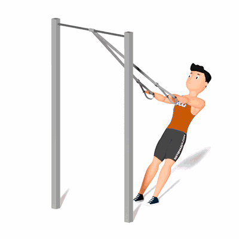

Remada Aberta no TRX

É um excelente exercício de musculação para treinar os músculos das costas como o grande dorsal, trapézio, redondos e romboides.
Ficha Técnica
Tipo: Funcional
Grupo Muscular: Costas
Aparelho: Nenhum
Músculos: Nenhum
Como realizar
- Conecte o TRX firmemente a uma barra;
- Segure as alças de forma que as palmas das mãos estejam voltadas para baixo;
- Caminhe para frente para se inclinar e os braços estejam completamente estendidos à sua frente;
- Mantenha o tronco firme e encaixado e puxe os cotovelos para trás enquanto eleva o corpo até as alças;
- Faça uma pausa quando o tórax estiver a poucos centímetros das alças;
- Abaixe o corpo de volta à posição inicial.
 RC STORE
RC STORE